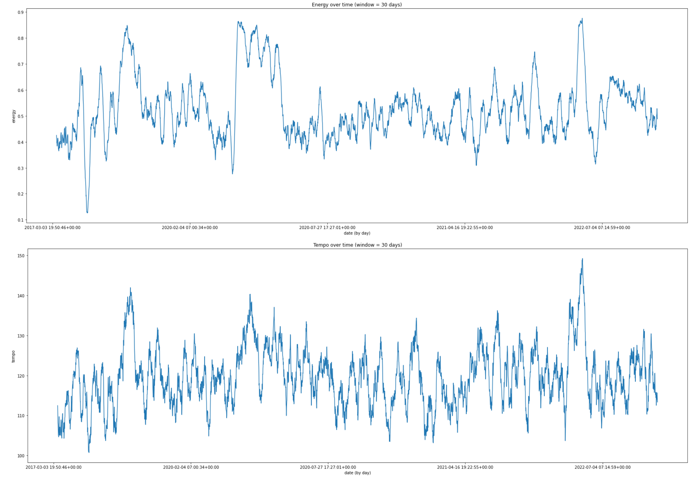

I started out by comparing my top 10 artists overall to my top 10 artists for 2022 in particular.
# my top ten added artists overall
# create top songs variable of the 25 artists with the most songs in the dataset
top_songs = liked_songs.artists.value_counts()[:25]
top_songs = top_songs.reset_index()
# select the columns
top_songs.columns = ['artist', 'number_of_songs']
# create barplot of the data
ax = sns.barplot(x = 'number_of_songs', y = 'artist', data = top_songs)
# my top ten artists for 2022
# create top songs variable of the 25 artists with the most songs in the dataset, added in 2022 only
top_songs_2022 = liked_songs[liked_songs.year == 2022]['artists'].value_counts()[:25]
top_songs_2022 = top_songs_2022.reset_index()
# select the columns
top_songs_2022.columns = ['artist', 'number_of_songs']
# create barplot of the data
ax = sns.barplot(x = 'number_of_songs', y = 'artist', data = top_songs_2022)
As we can see, the artist I've added the most songs for over the years is Taylor Swift, whereas the artist I've added the most songs for 2022 is
5 Seconds of Summer. We can compare this later on to our 2022-Wrapped dataset to see if the artists I've added the most songs for
are also the artists I listened to the most often in 2022.
We can also take a look at the most popular songs in my dataset. Do the artists I've added the most songs for appear at the top of this list?
# select cols from liked songs and sort by popularity
liked_songs[['added_at','name', 'artists', 'popularity', 'genre']].sort_values('popularity', ascending=False)[:20]
Taylor Swift, Harry Styles, and Conan Gray seem to appear in both places -- all of whom are pop artists. It does appear that most of the songs at the top of the
popularity ranking are by pop artists. We can see that the popularity ranking of the top 20 songs ranges from 100 to 89. This suggests that the overall popularity of
the songs in the dataset is not very high. We can check this with a histplot.
Excluding the 468 songs that have a popularity of 0, the overall popularity of the songs in the dataset is roughly normal with a mean
score of 45. The median, however, is a popularity score of 48. We can create a violin plot to see what the popularity of the six most frequent genres in the
dataset looks like.
# find the top 6 genres in the dataset
liked_songs.genre.value_counts().head(6).axes
# running the violin plot on top 6 genres
sns.violinplot(x=top_six_genres["genre"], y=top_six_genres["popularity"]);
pop and dance pop seem to have the highest concentration of songs with popularity rankings between 20 and 100. Both bow out around a popularity of 60 meaning
most songs in these genres have a popularity of 60.
Correlation Plot
We can make a heatmap of the correlation between the variables in the dataset. Correlation values range from -1 to 1.
The closer a correlation value is to 1 (positive or negative), the stronger the correlation between the two variables.
Variables with a strong positive correlation increase together, whereas variables with a strong negative correlation experience opposing polarization
(as one goes up, the other goes down and vice versa). The closer the correlation is to 0, the weaker the correlation. Variables will always have a correlation
of 1 with themselves.
The two variables with the strongest negative correlation of -0.8 are energy and acousticness. This means that in general, as energy goes up, acoustiness goes down,
and vice versa. For example, a song that has a higher acoustic level typically has less energy. This makes sense because we typically consider acoustic songs
to contain more instrumentals (acousticness and instrumentalness have a positive correlation of 0.24. This isn't a very strong correlation but it is worth noting,
whereas instrumentalness and energy have a negative correlation of -0.26).
An example of this correlation is 'Reverie' by Claude Debussy - a classical piano piece - which has an acousticness level of 0.995 and an energy level of 0.00904.
The variables with the strongest positive correlation of 0.78 are energy and loudness. This means that songs with more energy are often louder.
Audio Features vs Genres
We can also compare each of the audio features with the top six genres in the dataset.
for col in audio_features:
plt.figure(figsize=(21,2))
sns.boxplot(data=top_six_genres, x=col, y="genre", palette="Spectral");
It makes sense that acoustic pop has a higher level of acousticness, but it might suprising that boy band also has a higher level of acoustiness. It also makes
sense that boy band has a higher energy level, followed by dance pop, but I would expect dance pop to have a higher danceability level.
Time Series
Finally, we'll made time series plots of the feature attributes to visualize how the features of my songs have changed over time.
plot_time_series('popularity', 'Popularity over time (window = 30 days)', 30)
plot_time_series('duration_s', 'Duration (s) over time (window = 30 days)', 30)
plot_time_series('danceability', 'Danceability over time (window = 30 days)', 30)
plot_time_series('valence', 'Valence over time (window = 30 days)', 30)
plot_time_series('energy', 'Energy over time (window = 30 days)', 30)
plot_time_series('tempo', 'Tempo over time (window = 30 days)', 30)

Overall, these plots look stationary, which means the series has constant variance over time, without trend or seasonality. Thus the series should look roughly
similar at whatever time you view it. If you'd like to read more about stationarity, you can check out
Forecasting Rob J Hyndman and George Athanasopoulos or this
Medium article by Shay Palachy.